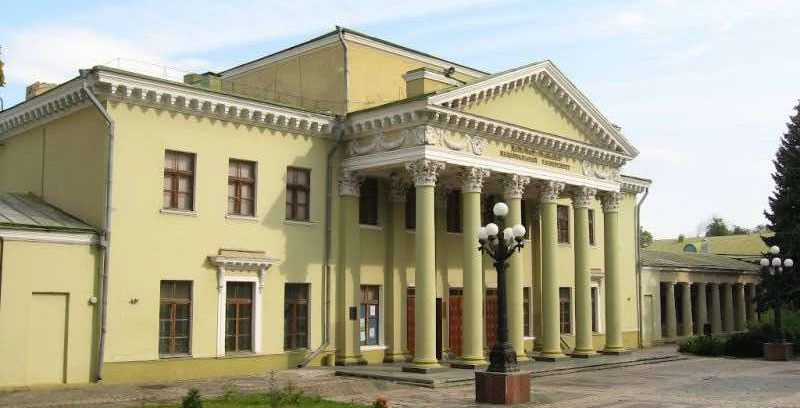

Розповідь про місто Дніпро коротко
Місто, яке розташувалось на березі однойменної річки Дніпро, неначе злилось з нею. Воно приваблює парками, музеями, виставками, театрами, безліччю маловідомих місць із своїми секретами.
Це українське місто має статус найважливішого центру машинобудування, металургійної промисловості, ракетобудування та аерокосмічності. Разом з тим воно сучасне та дуже красиве.
Історичні факти про місто Дніпро
Дніпро поєднує в собі унікальну архітектуру, котра легко переносить тебе в Америку чи Ізраїль, дозволить відчути себе жителем Західної Європи. Дніпро можна охарактеризувати як місто контрастів, де приховано багато загадок та секретів. Історія Дніпра як і походження назви міста Дніпро пройшли багато трансформацій.
- 1645-1784 роки – Новий Кодак
За часів козацтва на цих землях було засноване поселення Новий Кодак. Польська влада побудувала тут фортецю Кодак, на відкритті якої був Богдан Хмельницький. Звідси він часто видавав свої універсали. Вона переходила то до козаків, то до їх ворогів. Вважається, що в 1645 році тут було зведено дерев’яну церкву святого Миколи, котра дала початок існуванню міста Дніпро. Сюди входили такі села та міста: Обуха, Новий Кодак, Самар, Лоцманська Кам’янка, Половиця, Мануйлівка, Чаплі, Сухачівка, Діївка, Одинківка, Мандриківнка.
Після ліквідації Кодацької фортеці Кодак занепав. Колишні козацькі села були приєднані до Росії під новою назвою.
Цікавий факт: Вчені притримуються думки, що Катеринославів було декілька. Катеринослав 1 був заснований з 1776 по 1784 роки на березі річки Кільчень, при її впадінні у Самару. В 1776 році почали будувати місто, а через два роки тут вже була Азовська губернська канцелярія. Але дана територія була затоплена Самарою і Катерина видала указ про заснування другого Катеринослава.
- 1784-1796 – Катеринослав
Свою назву отримала на честь тоді правлячої Катерини ІІ. Місто мало стати третьою столицею Російської імперії після Москви та Петербургу. Зрозуміло, що будівництво було помпезним. З 1789 року засновуються нові колонії – Кронгартен, Йозефсталь, Фішерсдорф та село Краснопілля. В 1794 році в Катеринославі було відкрито першу суконну фабрику.
- 1796—1802 — Новоросійськ
Таку назву місто носило за часів правління Павла. Розвиток міста відбувався дуже повільно.
- 1802 – 1926 – Катеринослав
Цар Олександр І повертає йому колишню назву. В 1873 році на лівому березі міста збудовано вокзал, а через 11 років міст через річку Дніпро. Починається новий розвиток місті – промислово-металургійний. Активно будують заводи та зростають робітничі поселення навколо них. В 1986 році в Дніпрі з’явилась телефонна станція та проведена телефонна мережа. Цікаво, що бельгійці теж зробили свій вклад в місто: в 1897 році їх підприємці запустили електричний трамвай. Він став третім у всіх Російській імперії, після нижньоновгородського та київського.
- 1918—1919 — неофіційно Січеслав
В 1918 році було проголошено Українську Народну Республіку та прийнято неофіційну назву Січеслав. Вона згадується в деяких документах та згадках письменників і діячів культури. Впродовж українсько-більшовицької війни місто переходило з рук в руки. Навіть в 1924 році була висунута ще одна, не затверджена назва – Краснодніпровськ.
- 1926 —2016 — Дніпропетровськ
В радянський період місто було перейменовано в Дніпропетровськ та до його складу включили Амур, Нижньодніпровськ, Мануйлівку, Сахалін. Місто стали активно розвивати в дусі індустріалізації до середини 1980-тих років. В 1933 році був складений план по розбудові Дніпропетровська: планувалось розвивати лівобережжя та будувати нові мости, здійснити квартальну забудову, прокласти скрізь трамвайну колію. На місці міського цвинтаря звели великий стадіон «Сталь». В післявоєнний період місто розвивалось новими заводами та житловими масивами. На початку незалежності Дніпропетровськ занепав. Лише з початком нового тисячоліття він знову завирував.
- 19 травня 2016 року — Дніпро
Верховна Рада України перейменувала місто на Дніпро, викресливши з назви ім’я одного із організаторів Голодомору – Григорія Петровського.
Сьогодні Дніпро зачаровує поєднанням сучасності та старовини. Це місто, в яке хочеться приїздити та пізнавати. Його набережна є найдовшою в Європі з величезною кількістю зелені та фонтанів. До речі, Фонтан-лебідь, який тут встановлений може не тільки змінювати режим роботи, а й махати крилами та обертатись. Також в Дніпрі височіє Спасо-Преображенський собор, котрий пережив не одну революція та війна, а на його зведення пішло цілих 48 років. І це далеко не всі цікавинки космічної столиці України.
Цікаві факти про місто Дніпро
- У місцевому музеї є унікальна колекція катеринославської цегли з клеймом. Одна цеглина в експозиції з зображенням собачої лапи.
-
Потьомкінський палац:
Найстаріша будівля Дніпра побудована в 1790 році. Це «Потьомкінський палац», який нині називається «Палац студентів».
-
Перша кам’яна пам’ятка – кам’яна миля на Соборній площі, датується 1787 роком. Саме з неї почалась розбудова міста
-
По території області протікає найчистіша річка Європи – це річка Оріль.
-
У Дніпрі знаходиться своя «Китайська стіна» – найдовший будинок в Україні, що знаходиться на проспекті Героїв.
-
Найбільший арочний міст у Європі та перший залізобетонний міст «Мерефо-Херсонський» теж знаходиться тут.
-
У музеї Яворницького можна спостерігати відомі «Кам’яні баби».
-
На місцевому заводі виготовляють ракети «Зеніт», яким у світі немає жодного аналога.
-
Найлегендарніше місце Дніпра – Монастирський острів.
Його історія сягає вглиб століть: на шляху з варяг у греки це місце відвідували Андрій Первозванний, Володимир Великий, княгиня Ольга та князь Мстислав. В 870 році тут було збудовано візантійський монастир. -
Сучасне Дніпро може похвастатись трьома фортецями: Польською Кодацькою 1635 року, Нова Кодацька 1660 року та Старо-Самарською 1688 року.
-
Місто може похвалитись найбільшим у світі єврейським центром – Менорою, котрий відкрили в 2012 році.